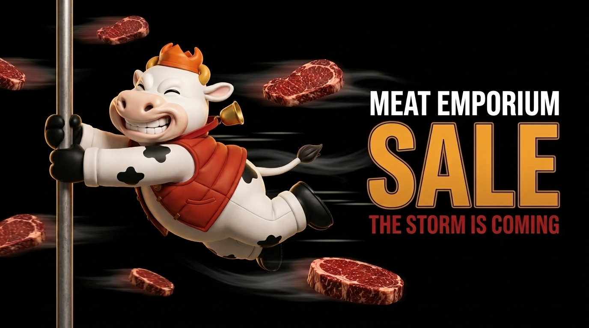
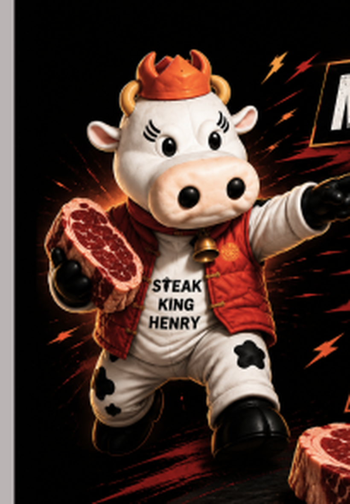
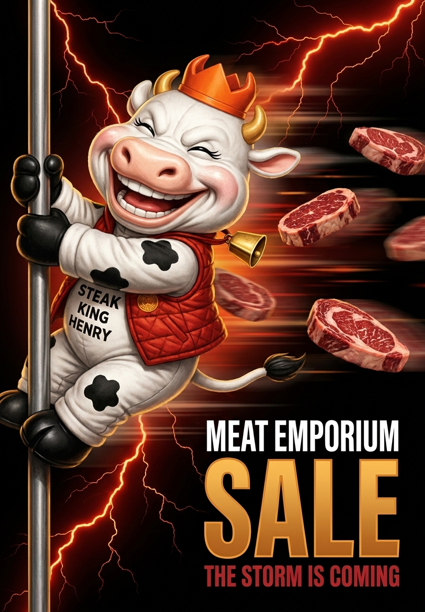

Locked 16 July 2026 · Theme: 打風 / Typhoon Season · Steak King HK

The idea
July is peak typhoon season, and Hong Kong already has the behaviour: when a signal goes up, the shelves get stripped. Local press calls it Black Friday with wind. The default typhoon larder is instant noodles and luncheon meat, which is exactly the gap Steak King fills, so the sale redirects a desire that already fires every summer rather than inventing one. Meat Emporium opens 22 July; Typhoon Wipha put up a T10 on 20 July last year.
Underneath the joke it is also true: delivery stops during a T8. Stock up before the signal goes up is real advice.
The one rule
The steaks get the realism. Henry never does.Cartoon character, real meat. That contrast is the house style and it is the whole visual idea. Photoreal Henry was tested and rejected: with real fur he stops being a mascot and becomes an animal. Stylised steaks were also tested and rejected: the meat is the product and it has to look like food.
Locked elements
Pose. Henry grips the pole with both black mitten hooves and nothing else touches it. His body is torn fully horizontal downwind, legs and boots trailing, tail streaming, cowbell yanked sideways, crown pressed back.
Wind direction. Left to right. Every steak travels that same vector, parallel to his trailing body. None tumble against the flow.
No lightning. No rain. Wind is shown only through horizontal speed streaks and soft air trails.
Ground. Solid black.
Type lockup. MEAT EMPORIUM in white condensed caps, SALE beneath in gold-orange with a dark outline, THE STORM IS COMING in crimson under it. Right side, stacked, in clean space.
Henry — character source of truth

Canonical Henry, cropped from the ME 24-hour extension email. Use this, not the USDA build.

Face reference for the wind-tunnel expression. Layout is wrong, use the face only.
Spiky orange crown on top. It is a crown, not a cap.
Two curved gold horns either side, below the crown.
Soft matte white body. Not glossy, not furry. Black splat-shaped spots on legs and haunches. No udder.
Red quilted sleeveless gilet with vertical stitching and a small round gold roundel, worn open.
STEAK KING HENRY in black, stacked on three lines, on his white chest.
Gold cowbell on a red collar. Chunky black mitten hooves and boots. Warm gold rim light on the silhouette.
Bipedal mascot proportions: head roughly a third of his height, short stubby limbs.
Fix in the build
The gilet's quiltingSmoothed away when Henry was stylised back. It is part of his identity and needs restoring.
The chest textSTEAK KING HENRY warps across his torso whenever he is rotated horizontal. Set it by hand.
The faceReads as a happy grin rather than a true wind-tunnel deform. Push the cheeks and jowls back toward his ears, peel the lips off the teeth, squash the snout, pin the ears flat. He is delighted, never frightened. See the face reference above.
Tonal kill switchEvergreen typhoon season only. Never peg the campaign to a live storm. If a real typhoon causes damage during the sale window, pull this KV immediately.